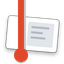
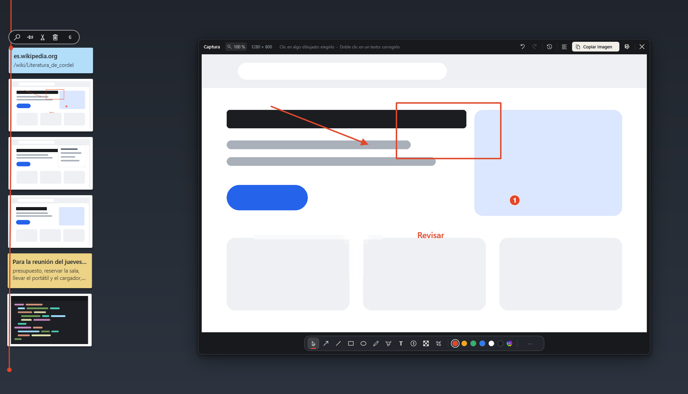
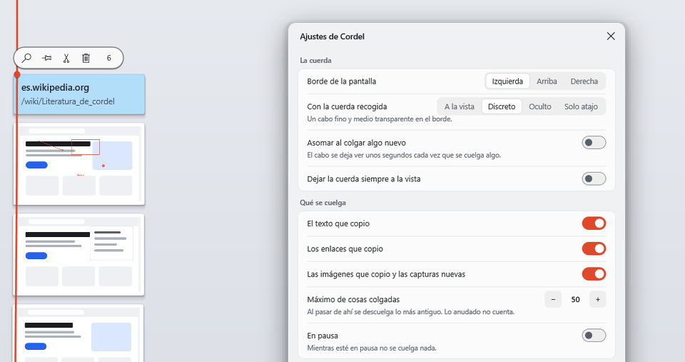

Instalada
Cordel-instalar.exe
La deja en tu usuario, sin pedir permisos de administrador, con su entrada en el menú Inicio y su desinstalador.
Descargar e instalar
Cordel Qué hace Cómo se usa DescargarUna cuerda escondida en el borde de la pantalla. Acerca el ratón y cae con tus capturas y todo lo que has copiado; apártalo y se recoge.
Windows 10 y 11 de 64 bits · 2 MB · gratis, sin cuentas y sin conexión
Cordel guarda lo último que copias y capturas en un hilo que solo aparece cuando lo buscas. Lo demás del tiempo, ni se ve ni gasta.


Claro u oscuro, como tengas Windows. También se puede elegir en sus Ajustes.
Es gratis. Elige una de las dos formas; las dos son el mismo programa.
Cordel-instalar.exe
La deja en tu usuario, sin pedir permisos de administrador, con su entrada en el menú Inicio y su desinstalador.
Descargar e instalarCordel.exe · 2,0 MB
Un solo archivo: se abre con doble clic y ya está en marcha. Lo que cuelgas se guarda igual en tu usuario.
Descargar Cordel.exeCordel no está firmada con un certificado de pago, así que la primera vez Windows puede avisar con «Windows protegió su PC». Si la has descargado de aquí, pulsa «Más información» y «Ejecutar de todas formas».
Instalada: en Configuración → Aplicaciones, busca Cordel y pulsa Desinstalar. Sin instalar: quita antes «Arrancar con Windows» en sus Ajustes si lo pusiste, ciérrala desde su icono («Salir») y borra el archivo. Lo colgado sigue en %LOCALAPPDATA%\Cordel hasta que borres esa carpeta.
Probada en Windows 10 de 64 bits. En Windows 11 debería funcionar igual, pero todavía no se ha probado. Todas las versiones están en la página de versiones, con sus huellas para comprobar la descarga.
Medido el 19 de noviembre de 2026 en Windows 10, con la versión 1.0.0. El editor, con una captura de 1280 × 800.